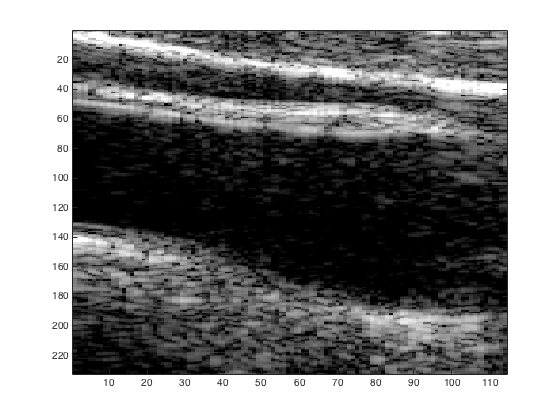
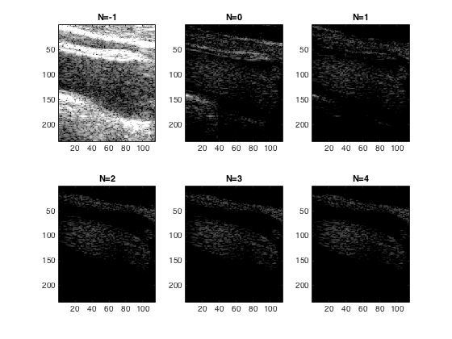
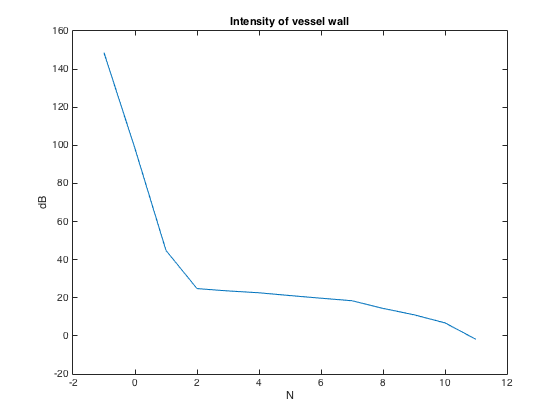
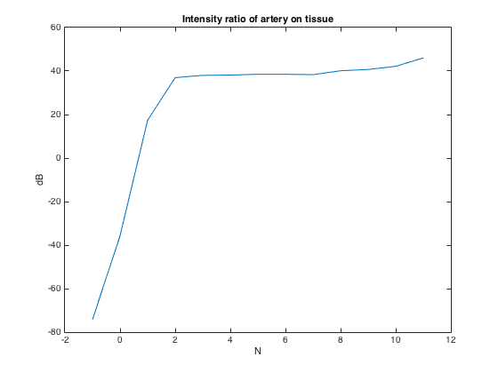
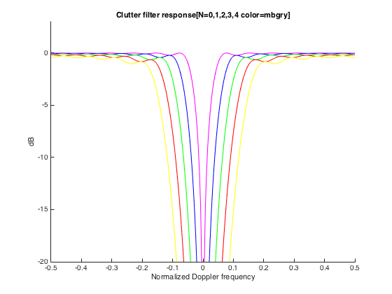
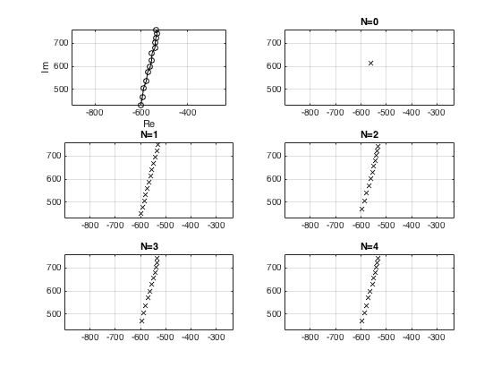
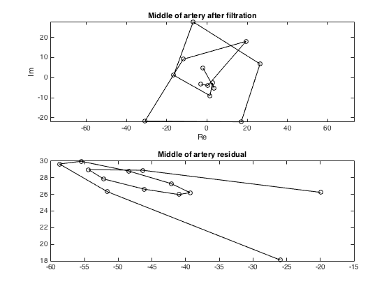
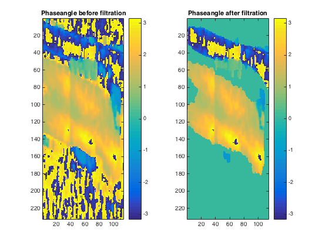
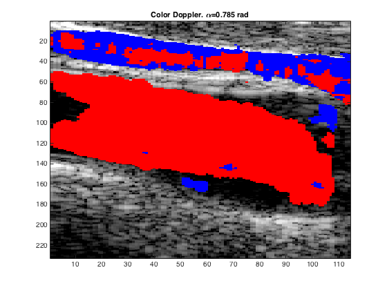
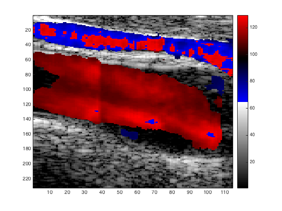

Exercise 10 TTK4165 Medical Signal Processing
Even Florenes Spring 2016
Contents
Documentation
Ex10.m
Purpose: Script answering tasks given in exercise 10 in TTK4165
Made by:
Even Florenes NTNU 2016
Related files:
imagelog.m: Image a matrix of ultrasound power in log scale
clutterfilterrespons.m
regressionfilter.m: Removes clutter from iq signal
Last changes:
2016-04-06 EF: First attempt
2016-04-08 EF: Implemented remaining exercises
Status:
Works
Exercise 1: Visualization
load carotid.mat
iq2d = squeeze(iq(6,:,:,1));
gain = -33;
dyn = 40;
imagelog(abs(iq2d).^2,gain,dyn);
 Exercise 2: Blood tissue ratio
% Set data-points for vessel wall & artery. r_tissue=48; b_tissue=30; r_artery=111;b_artery=40; % Averaging R samples radially and B samples laterally R=6; B=3; % Extract data iq_tissue =iq(:,r_tissue+[0:R],b_tissue+[0:B],1); iq_artery = iq(:,r_artery+[0:R],b_artery+[0:B],1); % Calculate intensity. I_tissue = abs(iq_tissue).^2; I_artery = abs(iq_artery).^2; % Average in all three dimensions. I_tissue = mean(I_tissue(:)); I_artery = mean(I_artery(:)); intensityRatio = 10*log(I_artery/I_tissue); fprintf('Intensity ratio between artery and tissue: %0.2f dB\n',intensityRatio); % How much larger is the intensity in the vessel wall compared to the % vessel? % % The intensity, power transferred per unit area, is much larger in the % vessel wall. % %
Intensity ratio between artery and tissue: -74.25 dB
Exercise 3: Regression filter for removing clutter
% Filter data with current order N. %y=regressionfilter(squeeze(iq(:,:,:,frameno),N)); frameNo=1; packetNo=6; gain = -20; for N=-1:4 % Create subplot. figure(2),subplot(2,3,N+2); % Filter data with current order N. y=regressionfilter(iq(:,:,:,frameNo),N); % Squeeze to remove all other packet-data. y=squeeze(y(packetNo,:,:)); % Show image. imagelog(abs(y).^2,gain,dyn); % Set title. title(['N=',num2str(N)]); end % Comment on the remaining blood and tissue signal for increasing filter % order: % % As we increase N the image becomes darker and darker. For higher N the % only remaining part in the image is the fluctuation in the artery and % vein. All of the surrounding vessel wall is removed. % % packetSize=13; % Set data-points for vessel wall & artery. r_tissue=48; b_tissue=30; r_artery=111;b_artery=40; % Averaging R samples radially and B samples laterally R=6; B=3; % Extract data N = -1:packetSize-2; iq_tissue =iq(:,r_tissue+[0:R],b_tissue+[0:B],1); iq_artery = iq(:,r_artery+[0:R],b_artery+[0:B],1); I_ratio = zeros(1,length(N)); I_tissueMean = zeros(1,length(N)); I_arteryMean = zeros(1,length(N)); for i = 1:length(N) y_tissue = regressionfilter(iq_tissue,N(i)); y_artery = regressionfilter(iq_artery,N(i)); I_tissue = abs(y_tissue).^2; I_artery = abs(y_artery).^2; % Average in all three dimensions. I_tissueMean(i) = mean(I_tissue(:)); I_arteryMean(i) = mean(I_artery(:)); I_ratio(i) = 10*log(I_arteryMean(i)/I_tissueMean(i)); end figure(3),plot(N,10*log(I_tissueMean)),title('Intensity of vessel wall'); xlabel('N');ylabel('dB'); intensityClutterComponent = abs(10*log(I_arteryMean(2))-10*log(I_arteryMean(1))); fprintf('The intensity of the clutter component compared to the \n') fprintf('echo strength from the red blood cells is: %0.2f dB\n',intensityClutterComponent); figure(4),plot(N,I_ratio),title('Intensity ratio of artery on tissue'); xlabel('N');ylabel('dB'); % At what filter order is B/V the largest % B/V is largest at highest filter orden,N,11. After N exceeds 2 B/V % flattens out, but still increases a little until packSize-2 = 11. % figure(5);hold on; colors = ['mbgry']; for N=0:4 [y,c,Fm]=regressionfilter(iq(:,:,:,frameNo),N); [f,H]=clutterfilterrespons(Fm); color = colors(N+1); plot(f,10*log10(H),[color '-']); end; title('Clutter filter response[N=0,1,2,3,4 color=mbgry]'); xlabel('Normalized Doppler frequency'); ylabel('dB'); ylim([-20 3]); xlim([-0.5 0.5]); hold off % Comment. % As we increase the filter orden,N, of the regressionfilter, the filtering % of the clutter removes more and more of the lower frequencies in the image. % Using this high pass filter removes stationary parts (low frequency) of % the image, and leaves moving parts in the image (high frequency). The % moving parts in the image is the blood flow in the artery and vein, % and depending on the filter orden some movement in the vessel wall % is also let trough. %
The intensity of the clutter component compared to the echo strength from the red blood cells is: 11.83 dB   
Exercise 4: Complex plots
frameNo = 1; r = 48; b = 30; iq1 = iq(:,:,:,frameNo); % Plot the complex data. Circle the datapoints. figure(6); subplot(3,2,1); plot(squeeze(iq1(:,r,b)),'k-o'); % Make the axes scale equally in each direction. axis('equal'); % Label the axes. xlabel('Re');ylabel('Im'); % Save the current axes for later. axlimits=axis; % Turn grid on. grid on; % Use the relation between phase shift and movement % to explain how the signal looks. % In the cessel wall there is small low frequent movements around a fixed % phase. Subplot (1,1) in figure 6 shows that the phase shift of the area % is relatively fixed at real axis, but some movements leads to a small % phase shift in the wall for N=0:4, subplot(3,2,N+2); % Filter... [y,c]=regressionfilter(iq1,N); plot(squeeze(c(:,r,b)),'kx'); % Set axis. axis(axlimits) grid on; % Set title. title(['N=',num2str(N)]); end; %How does the clutter component look? % The clutter component looks more and more like the complex plot of the iq % data as we increase the filter orden N. This shows that the % regressionfilter is able to remove the phase shift due to clutter % movements. r = 111; b= 40; figure(7) subplot(2,1,1),plot(squeeze(y(:,r,b)),'k-o'); title('Middle of artery after filtration'); axis('equal'); % Make the axes scale equally in each direction. xlabel('Re'); ylabel('Im'); % Label the axes. %Is the adaption between signal and clutter polynomial as good in blood as in tissue? % After filtration the the blood signal complex plot is centered around 0. % This shows we have managed to remove most of the clutter component, have % a complex plot of the movement due to blood flow. % subplot(2,1,2),plot(squeeze(c(:,r,b)),'k-o'); title('Middle of artery residual'); %What does the residual signal look like? % The residual is centered around Im = 28, Re = -45 which shows that there % is strong clutter component from the movement of the vessel wall. 
Exercise 5: Velocity estimation using the autocorrelation method
frameno = 5; iq1=squeeze(iq(:,:,:,frameno)); N=3; y=regressionfilter(iq1,N); % Get packetsize in data. packetsize=size(iq,1); % Make two matrices with lag ? = 1 of the clutter-filtered data. y1 = y(1:packetsize-1,:,:); y2 = y(2:packetsize,:,:); R1=conj(y1).*y2; R1=squeeze(mean(R1)); R=10; B=3; b=ones(R,B)/(R*B); R1=filter2(b,R1); %Find the phase angle. phaseangle= angle(R1); figure(8);colormap('default'); subplot(1,2,1),imagesc(phaseangle); % Show colorbar. colorbar; title('Phaseangle before filtration'); P=squeeze(mean(abs(y).^2)); % Spatial averaging. P=filter2(b,P); % Normalization. P=P/max(P(:)); dyn = -14; beta=10.^(dyn/10);% 16 dB dynamic range index=find(P<beta); % Get indexes. phaseangle(index)=0; figure(8);colormap('default'); subplot(1,2,2),imagesc(phaseangle); % Show colorbar. colorbar; title('Phaseangle after filtration'); % What sign does the phase shift in the artery have? % The artery have phase shift with positive sign ranging in general between % 1.5-3 given by the colorbar. % What is the relation between sign and flow direction? % Red, orange, yellow (warm colors) is used for positive values and show % flow direction towards the ultrasound transducer, and blue (cold colors) % is used for negative sign which indicates flow away from the transducer. % What sign does the phase shift in the vein have? Comment. % The vein have phase shift with negative sign, which shown with blue % color. The artery transports blood from the heart towards the brain in % the imaged area, which is here towards the transducer. % The vein transports the blood back from the brain towards which in the % imaged area is away from the transducer.
Color encoding
Simple code to make a combined color and grayscale tissue image Make a cf_colormap with 66 colors: A cf_colormap has three columns, one for red (R), one for green (G), and one for blue (B)
cf_colormap=zeros(66,3); % The first 64 colors are for grayscale cf_colormap(1:64,:) = gray(64); % The last to colors are red and blue redindex=65; blueindex=66; cf_colormap(redindex,:)=[1 0 0]; %R=1, G=0, B=0 cf_colormap(blueindex,:)=[0 0 1]; %R=0, G=0, B=1 % Tissueimage: Grayscale with 64 levels, from IMAGELOG % Phaseangle: Matrix with estimated phaseangle for all points in the % image. alfa = pi/4; positiveindex=find(phaseangle>alfa); negativeindex=find(phaseangle<-alfa); iq2d = squeeze(iq(6,:,:,1)); gain = -33; dyn = 40; tissue_image = imagelog(abs(iq2d).^2,gain,dyn); % Set the pixels with positive and negative phase-angle to red and blue cf_image=tissue_image; cf_image(positiveindex)=redindex; cf_image(negativeindex)=blueindex; %Show colorflow image using our custom colormap: figure(9),image(cf_image); colormap(cf_colormap); title(['Color Doppler. \alpha=',num2str(alfa,3),' rad']);
Graded color encoding
% Graded red-blue color encoding redbluemap=zeros(64,3); redbluemap(1:32,1)=[31:-1:0]'/31;% 1 .. 32: shades of red redbluemap(33:64,3)=[0:1:31]'/31;% 33 .. 64: shades of blue redbluemap = fliplr(redbluemap); % Stack the grayscale and red-blue scale on top of each-other => a scale with 128 colors: cf_graded_colormap=zeros(128,3); cf_graded_colormap(1:64,:)=gray(64); %[1..64]: Grayscale cf_graded_colormap(65:128,:)=redbluemap;%[65..128]:Color % Set pixels with low phase shifts to zero, phaseangle(find(abs(phaseangle)<alfa))=0; % Find indexes to points where the phase shift is not zero: index=find(phaseangle~=0); % Make phase angle in the area [-pi..pi] to indexes [65..128] phaseangle=phaseangle/pi*31.5; % [-pi .. pi] -> [-31.5 .. 31.5] phaseangle=round(phaseangle+32.5);% [-31.5 .. 31.5] -> [1 .. 64] phaseangle=phaseangle+64; % [1 .. 64] -> [65 .. 128] % Combine images tissue_image(index)=phaseangle(index); % Show image figure(10); image(tissue_image); colormap(cf_graded_colormap); colorbar;